การเริ่มต้นใช้งานบอร์ด Seeed Studio XIAO ESP32-C3#
- Seeeduino XIAO ESP32-C3
- Arduino ESP32 Core
- Arduino Sketch Demo 1
- Arduino Sketch Demo 2
- Arduino Sketch Demo 3
- Arduino Sketch Demo 4
- Arduino Sketch Demo 5
▷ Seeeduino XIAO ESP32-C3#
บทความนี้กล่าวถึง การทดลองใช้งานบอร์ดไมโครคอนโทรลเลอร์ XIAO ESP32-C3 ของบริษัท Seeed Studio ในเบื้องต้น
→ แนะนำให้อ่านบทความที่เกี่ยวข้อง: การเริ่มต้นใช้งานชิป Espressif ESP32-C3 (RISC-V CPU Core)
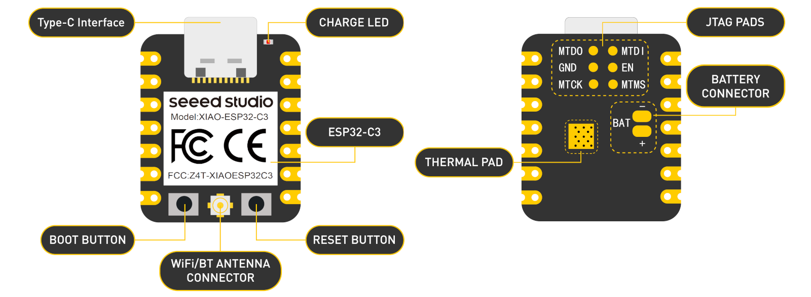
รูป: บอร์ด Seeeduino XIAO ESP32-C3 (มุมมองจากด้านหน้าและด้านหลัง)
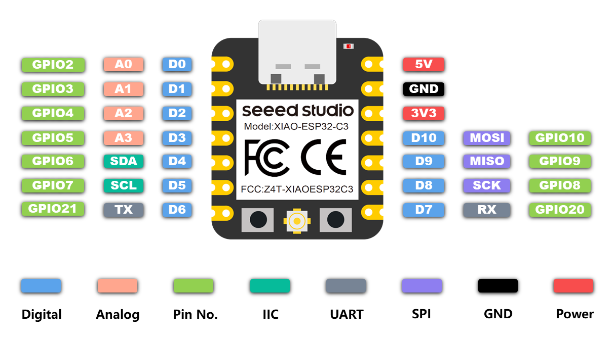
รูป: แผนผังแสดงตำแหน่งขา (PinOut) ของบอร์ด Seeeduino XIAO ESP32-C3
ข้อมูลเกี่ยวกับบอร์ด
- เริ่มจำหน่ายในเดือนกรกฎาคม ค.ศ. 2022
- มีตัวประมวลผลหลักคือ ชิป Espressif ESP32-C3FN4 SoC
- 32-bit RISC-V (single-core, 160MHz)
- RV32IMC ISA, Four-stage Pipeline, 32-bit Multiplier/Divider
- On-chip Memory: 400KB SRAM, 384KB ROM
- มีชิปหน่วยความจำแฟลชภายในชิป ขนาด 4MB (QSPI Flash)
- รองรับการสื่อสารข้อมูลไร้สาย 2.4GHz Wi-Fi (IEEE 802.11 b/g/n) และ Bluetooth / BLE 5.0, Bluetooth Mesh
- ทำงานที่ระดับแรงดันไฟเลี้ยง +3.3V
- มีปุ่มกด BOOT / GPIO-9 (Active-low, 10k Pullup)
สำหรับการเลือกเข้าสู่โหมด USB-Serial Bootloader และ CHIP_EN (Active-low, 10k Pullup) สำหรับรีเซตการทำงานของชิป
- ขาของชิป ESP32-C3 จำนวนหนึ่ง จะถูกใช้งานเป็นขาที่เรียกว่า Strapping Pins และจะต้องมีสถานะลอจิกตามที่กำหนดไว้เมื่อชิปถูกรีเซต แล้วหลังจากนั้นจึงใช้เป็นขา GPIO ตามปรกติได้ เช่น ขาสำหรับเลือกโหมดการทำงานหลังจากรีเซต (Boot Mode Selection)
- ถ้าขา GPIO-9 มีลอจิกเป็น LOW (0) และขา GPIO-8 เป็น HIGH (1) จะเข้าสู่ ROM Serial Bootloader หลังจากรีเซต และสามารถใช้โปรแกรม esptool.py ในการอัปโหลดโปรแกรมได้ แต่ถ้า GPIO-9 เป็น HIGH (1) จะเข้าสู่การทำงานและรันคำสั่งของโปรแกรมตามปรกติ (Normal Execution Mode)
- เชื่อมต่อกับคอมพิวเตอร์ของผู้ใช้ด้วยคอนเนกเตอร์ USB Type-C
- ไม่มีชิป USB-to-Serial Converter / Bridge ดังนั้นจะต้องเลือกใช้ USB CDC on Boot: Enabled สำหรับการสื่อสารข้อมูลแบบอนุกรมผ่านบัส USB เมื่อเขียนโปรแกรมด้วย Arduino-ESP32 Core
- มีไอซี XC6210B332MR ควบคุมแรงดันไฟฟ้าให้เป็น +3.3V (700mA max.)
- มีวงจร Crystal Oscillator สร้างสัญญาณ Clock ที่มีความถี่ 40MHz และ 32.768kHz ให้ ESP32C3
- แรงดันไฟเลี้ยงของบอร์ดได้จาก USB (VBUS=+5V) ต่อผ่านไดโอดไปยังขา VIN และมีฟิวส์แบบ Polyfuse ป้องกันการใช้กระแสเกิน (ขนาด 500mA)
- ในกรณีที่ต่อกับแบตเตอรรี่ชาร์จประจุได้แบบ LiPo (+3.7V) แรงดันที่ขา VBAT จะถูกนำไปป้อนให้ไอซีแปลงแรงดันให้เป็น +3.3V (ถ้าไม่มีแรงดันไฟเลี้ยงจาก VUSB หรือไม่ได้เชื่อมต่อพอร์ต USB)
- ความแตกต่างจากบอร์ดอื่นที่ใช้ชิป ESP32-C3
- โมดูลมีขนาดเล็ก (20x17.5mm, XIAO Series Form Factor) และมีจำนวนขา I/O ค่อนข้างจำกัด
- มีวงจรชาร์จประจุสำหรับแบตเตอรี่ (LiPo Battery, Single-cell, 3.7V) + Charging LED
- มีคอนเนกเตอร์สำหรับเชื่อมต่อสายอากาศภายนอก (U.FL Antenna Connector)
- ไม่มี On-board User LED
- ไฟล์ Schematic (.pdf)
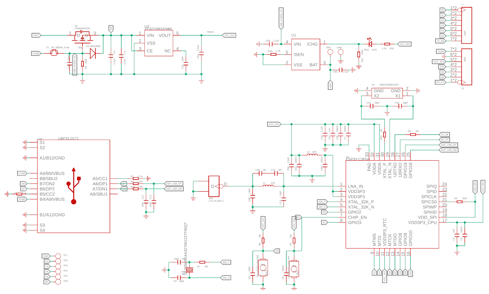
รูป: ผังวงจรของบอร์ด Seeeduino XIAO ESP32-C3
▷ Arduino ESP32 Core#
ถัดไปเป็นการสาธิตขั้นตอนใช้งานซอฟต์แวร์ Arduino IDE v2.2.x โดยได้ติดตั้ง Arduino ESP32 Core ใน Arduino IDE ไว้แล้ว เพื่อทดลองคอมไพล์ และอัปโหลดโปรแกรมที่ได้ไปยังบอร์ดไมโครคอนโทรลเลอร์
การติดตั้ง Arduino ESP32 Core ใน Arduino IDE ทำได้ง่าย โดยไปที่เมนู "File -> Preferences -> Additional Boards Manager URLs" แล้วเพิ่มรายการ ซึ่งเป็น URL ของไฟล์ .json ดังต่อไปนี้
https://raw.githubusercontent.com/espressif/arduino-esp32/gh-pages/package_esp32_dev_index.json
จากนั้นใน Boards Manager ให้ค้นหาและติดตั้งแพ็กเกจต่าง ๆ สำหรับ esp32 เวอร์ชันล่าสุด
คำแนะนำ: ในการใช้งานบอร์ด ESP32-C3 ซึ่งไม่มีชิป USB-to-Serial Bridge ให้กดปุ่ม BOOT ค้างไว้ แล้วกดปุ่ม EN แล้วปล่อย เพื่อทำการรีเซตการทำงานของบอร์ด ให้เข้าสู่โหมด ROM Serial Bootloader จากนั้นใน Arduino IDE จึงสามารถมองเห็นหมายเลขพอร์ตอนุกรมของบอร์ด แล้วเลือกพอร์ตดังกล่าวในขั้นตอนการอัปโหลด เมื่ออัปโหลด Arduino Sketch ครั้งแรกได้สำเร็จแล้ว ครั้งถัดไป ไม่จำเป็นต้องกดปุ่มใด ๆ เพื่อเข้าสู่ Serial Bootloader แต่ต้องเลือกหมายเลขพอร์ตให้ถูกต้องตรงกับที่ใช้งานจริง
▷ Arduino Sketch Demo 1#
โค้ดตัวอย่างแรกสาธิตการแสดงข้อมูลเชิงฮาร์ดแวร์เกี่ยวกับชิป ESP32C3 และเวอร์ชันของ Espressif ESP-IDF ที่ได้ใช้ในการคอมไพล์โค้ด
ตัวอย่างการใช้คำสั่งจากคลาส ESP
(cores/esp32/Esp.h) เช่น
ESP.getSdkVersion(): เวอร์ชันของซอฟต์แวร์ Espressif ESP-IDF ที่ใช้ESP.getChipRevision(): เวอร์ชันการแก้ไขชิป SoCESP.getCpuFreqMHz(): ความถี่ของซีพียูสำหรับการทำงาน (MHz)ESP.getHeapSize(): ขนาดของหน่วยความจำที่ใช้งานสำหรับ Heap ของ SRAMESP.getFreeHeap(): ความจุที่ยังใช้ได้สำหรับการใช้งานของ SRAM ในส่วนที่เป็น HeapESP.getPsramSize(): ขนาดความจุของหน่วยความจำ PSRAM (SPI SRAM)ESP.getFreePsram(): ความจุที่ยังใช้ได้สำหรับการเก็บข้อมูลใน PSRAMESP.getFlashChipSize(): ขนาดความจุของหน่วยความจำแฟลชESP.getFlashChipSpeed(): ความเร็วหรือความถี่สำหรับการทำงานของหน่วยความจำแฟลซ (MHz)
void setup() {
Serial.begin(115200);
while(!Serial);
delay(1000);
Serial.println("\nESP32 C3 Demo...\n");
}
void loop() {
Serial.println("=========================================");
Serial.printf( "Arduino ESP32 Core v%u.%u.%u\n",
ESP_ARDUINO_VERSION_MAJOR,
ESP_ARDUINO_VERSION_MINOR,
ESP_ARDUINO_VERSION_PATCH );
Serial.printf("Espressif IDF: %s\n", ESP.getSdkVersion() );
Serial.printf("Chip Revision %lu\n", ESP.getChipRevision() );
Serial.printf("Cpu Freq. %lu MHz\n", ESP.getCpuFreqMHz() );
Serial.printf("Heap (total/free): %lu / %lu bytes\n",
ESP.getHeapSize(), ESP.getFreeHeap());
Serial.printf("PSRAM (toal/free): %lu / %lu bytes\n",
ESP.getPsramSize(), ESP.getFreePsram());
Serial.printf("Flash Size: %lu MB, Flash Speed: %lu MHz\n",
ESP.getFlashChipSize()/(1024*1024UL),
ESP.getFlashChipSpeed()/(uint32_t) 1e6 );
// more info...
Serial.printf("Espressif chip model: %s\n",
ESP.getChipModel() );
Serial.printf("Number of CPU Cores: %d\n",
ESP.getChipCores() );
String str;
switch(ESP.getFlashChipMode()) {
case FM_QIO: str = "QIO"; break;
case FM_QOUT: str = "QOUT"; break;
case FM_DIO: str = "DIO"; break;
case FM_DOUT: str = "DOUT"; break;
default: str = "Unknown"; break;
}
Serial.printf("Flash model: %s\n", str.c_str() );
Serial.println("=========================================\n");
delay(4000);
}
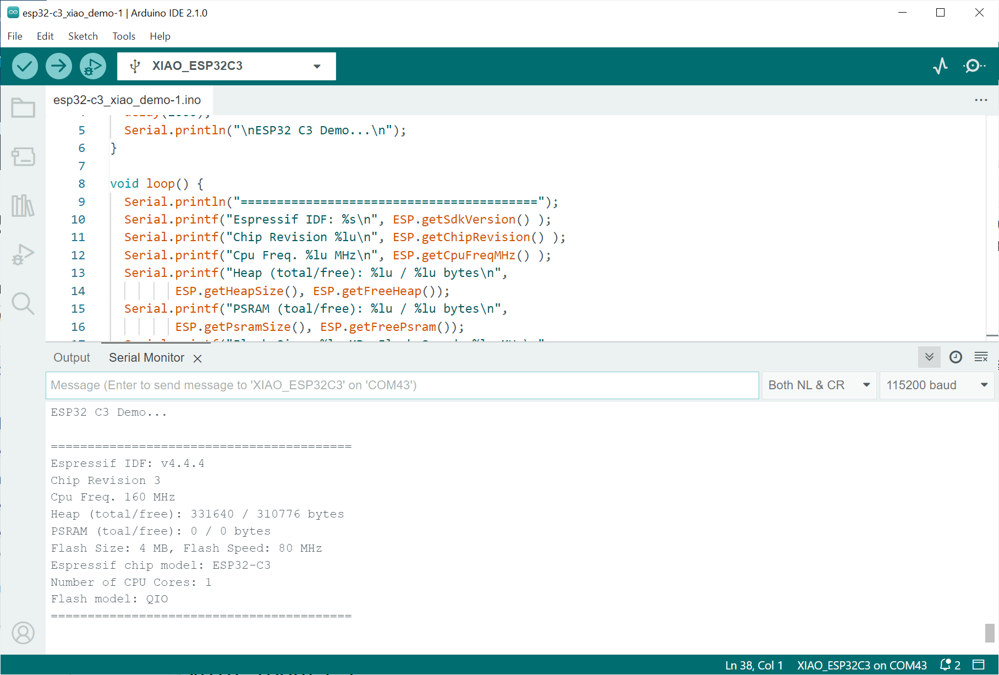
รูป: ตัวอย่างข้อความเอาต์พุตใน Arduino IDE - Serial Monitor
▷ Arduino Sketch Demo 2#
โค้ดตัวอย่างที่สองสาธิตการปรับความถี่ในการทำงานของซีพียู และทดสอบความเร็วในการทำงานของซีพียูเมื่อใช้ความถี่ที่แตกต่างกัน เช่น 10MHz, 20MHz, 40MHz, 80MHz และ 160MHz (default)
uint32_t saved_freq;
void setup() {
Serial.begin(115200);
while(!Serial);
delay(1000);
Serial.println("\n\nESP32 C3 Demo...\n");
// Get the current CPU frequency (in MHz).
saved_freq = getCpuFrequencyMhz();
}
#define SEP_LINE "====================================="
void speed_test() {
const uint32_t repeat_times = 1e6;
Serial.println( SEP_LINE SEP_LINE );
uint32_t frequencies_mhz[] = {20,40,80,160};
int n = sizeof(frequencies_mhz)/sizeof(uint32_t);
for ( uint32_t i=0; i < n; i++ ) {
uint32_t freq = frequencies_mhz[i];
setCpuFrequencyMhz( freq );
Serial.printf("Freq. (CPU/XTAL/APB): %3lu/%lu/%lu MHz",
getCpuFrequencyMhz(),
getXtalFrequencyMhz(),
getApbFrequency()/(uint32_t)1e6);
uint32_t ts = micros(); // Get the start ime in usec.
// Simple counting loop
for ( volatile uint32_t j=0; j < repeat_times; j++);
ts = micros() - ts; // Compute the time difference.
Serial.printf( ", Exec. time: %6lu usec\n", ts );
}
Serial.println( SEP_LINE SEP_LINE "\n" );
// Restore the CPU frequency.
setCpuFrequencyMhz( saved_freq );
}
void loop() {
static uint32_t ts = 0;
if ( millis() - ts >= 5000 ) {
ts = millis();
speed_test();
}
}
จากข้อความเอาต์พุตใน Arduino Serial Monitor จะเห็นได้ว่า ความถี่ของซีพียูมีผลต่อระยะเวลาในการทำคำสั่ง ถ้าเพิ่มความถี่ของซีพียู ก็จะใช้ระยะเวลาน้อยลง
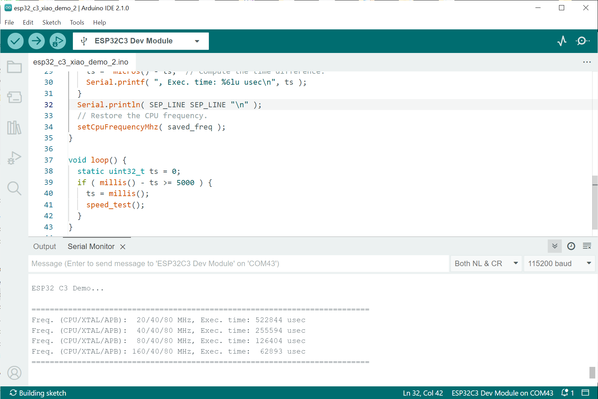
รูป: ตัวอย่างข้อความเอาต์พุต
▷ Arduino Sketch Demo 3#
ตัวอย่างถัดไปเป็นการสาธิตการรับส่งข้อมูลระหว่างวงจร USB-CDC กับวงจร Hardware Serial ภายในชิป ESP32-C3 ซึ่งมีสองตัวเลือกคือ
Serial0(ใช้ขา TX=GPIO-21 / RX=GPIO-20) และSerial1(ใช้ขา TX=GPIO-9 / RX=GPIO-10)
ในตัวอย่างนี้ ถ้าทดลองกับบอร์ด ESP32-C3 จะต้องมีการใช้ลวดสายไฟ เชื่อมต่อขา TX กับ RX ที่ใช้กับวงจร Hardware Serial เมื่อมีข้อมูส่งมาจากคอมพิวเตอร์ผู้ใช้ โดยใช้ USB-CDC ข้อมูลดังกล่าว จะถูกส่งต่อไปยังขา TX ของ Hardware Serial และมีการรับข้อมูลกลับเข้ามาทางขา RX แล้วส่งกลับไปยังคอมพิวเตอร์ของผู้ใช้
#include <HardwareSerial.h>
#define HW_SERIAL_ID (0) // 0 or 1
HardwareSerial MySerial( HW_SERIAL_ID );
void setup() {
if (HW_SERIAL_ID==0) {
MySerial.begin(115200, SERIAL_8N1, 21 /*Tx*/, 20 /*Rx*/ );
} else {
MySerial.begin(115200, SERIAL_8N1, 9 /*Tx*/, 10 /*Rx*/ );
}
MySerial.setDebugOutput(false);
while (MySerial.available()) { (void)MySerial.read(); }
Serial.begin(921600); // USB-CDC
while(!Serial);
Serial.flush();
delay(1000);
Serial.println("ESP32C3 Serial Bridge Test...");
}
void loop() {
// Read data bytes from Serial and send them to MySerial.
while( Serial.available()) {
char ch = Serial.read();
MySerial.write(ch);
}
// Read data bytes from MySerial and send them to Serial.
while( MySerial.available()) {
char ch = MySerial.read();
Serial.write(ch);
}
}
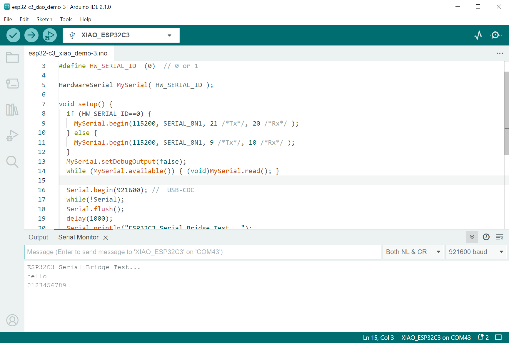
รูป: ตัวอย่างข้อความที่ถูกส่งจากคอมพิวเตอร์ของผู้ใช้ผ่านทาง Arduino Serial Monitor และได้รับกลับมา
▷ Arduino Sketch Demo 4#
ชิป ESP32-C3 มีวงจรแปลงสัญญาณแอนะล็อกให้เป็นข้อมูลดิจิทัล (ADC: Analog-to-Digital Converter) จำนวน 2 ชุด (ADC1 & ADC2) ซึ่งเป็นประเภทที่เรียกว่า SAR (Successive Approximation Register) และให้ข้อมูลที่มีขนาด 12 บิต (ADC Sampling Resolution)
- วงจร ADC1 ใช้กับขา GPIO0 .. GPIO4 (ซึ่งตรงกับช่องอินพุต ADC1_CHANNEL_0 .. ADC1_CHANNEL_4 ตามลำดับ)
- วงจร ADC2 ใช้กับขาอินพุต GPIO5 (ช่องอินพุต ADC2_CHANNEL_0)
วงจร ADC ใช้แรงดันไฟเลี้ยงภายในเป็นแรงดันอ้างอิงซึ่งคงที่ (Vref) สำหรับการแปลงข้อมูล ซึ่งปรกติแล้ว Vref จะมีค่าโดยประมาณ 1100mV (ชิปแต่ละตัวอาจมีค่า Vref แตกต่างกันได้ และอยู่ในช่วงประมาณ 1100mV +/- 100mV) ดังนั้นสัญญาณแอนะล็อก ก็ควรจะมีแรงดันไฟฟ้าไม่เกิน Vref แต่ถ้าต้องการจะรับแรงดันไฟฟ้าให้สูงกว่า ก็สามารถทำได้โดยการตั้งค่าลดทอนสัญญาณ หรือ Attenuation เพื่อลดขนาดของสัญญาณอินพุตก่อนป้อนให้วงจร ADC และมีค่าที่เลือกได้ดังนี้
ADC_ATTEN_DB_0: ช่วงแรงดัน 0mV .. 750mVADC_ATTEN_DB_2_5: ช่วงแรงดัน 0mV .. 1050mVADC_ATTEN_DB_6: ช่วงแรงดัน 0mV .. 1300mVADC_ATTEN_DB_11: ช่วงแรงดัน 0mV .. 2500mV
ถ้าพิจารณาค่า ADC_ATTEN_DB_0 หรือ 0dB ก็หมายความว่า ไม่มีการลดทอนสัญญาณ
หรือมีอัตรา 1:1 และมีแรงดันไม่เกิน 750mV ซึ่งน้อยกว่า Vref=1100mV
แต่ถ้าเลือกค่า ADC_ATTEN_DB_11 เนื่องจากมีการลดทอนสัญญาณ ก็จะรับแรงดันอินพุตได้สูงขึ้น
แต่ไม่เกิน 2500mV (เป็นค่าโดยประมาณ) ถ้าคำนวณอัตราส่วนระหว่าง 750mV : 2500mV
แล้วแปลงเป็นหน่วยเป็น dB ก็จะได้
ในกรณีที่มีการอ่านค่าด้วย ADC แล้วเลือกใช้ค่าความละเอียดจำนวน 12 บิต ซึ่งจะได้ค่าในช่วง 0..4095 (หรือ ค่าสูงสุด ) และถ้านำมาคำนวณเป็นแรงดันไฟฟ้าในหน่วยมิลลิโวลต์ (mV) โดยใช้ความสัมพันธ์แบบเชิงเส้น ก็มีสูตรคำนวณดังนี้
โดยที่ คือ ค่าแรงดันสูงสุดสำหรับการเลือกอัตราการลดทอนสัญญาณอินพุตในแต่ละกรณี
อย่างไรก็ตาม จากเอกสารของผู้ผลิต ได้มีการแนะนำให้ทำการปรับค่าและชดเชยค่าความผิดพลาด (ADC Calibration) จากการอ่านค่าด้วย ADC ภายในชิป ESP32C3
รูปตัวอย่างต่อไปนี้ แสดงรูปกราฟความสัมพันธ์ของข้อมูลระหว่างค่าแรงดันไฟฟ้าที่ใช้เป็นอินพุตและค่าที่อ่านได้
โดยใช้ค่าลดทอนสัญญาณเป็น ADC_ATTEN_DB_11 และควรจะมีค่าแรงดันอินพุตได้ไม่เกิน 2500mV
เมื่อมีการปรับชดเชยค่าความผิดพลาด โดยให้มีการเริ่มต้นค่าที่ 0mV ก็จะได้รูปกราฟทางขวามือ และค่า จะได้ประมาณ 2700mV ในกรณีที่อ่านค่าได้ 4095 (สูงสุด) และถ้ามีการเพิ่มแรงดันอินพุตให้สูงกว่าค่าดังกล่าว (แต่ต้องไม่เกิน VCC=+3.3V) การแปลงค่าด้วย ADC ก็จะให้ค่าคงเดิม ไม่เพิ่มตามแรงดันอินพุต
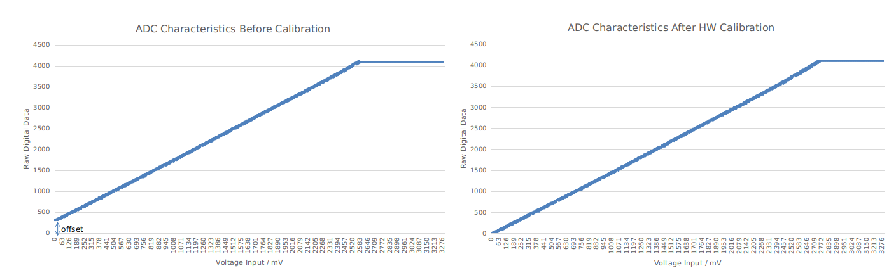
รูป: การแสดงความสัมพันธ์ระหว่างค่าแรงดันไฟฟ้าที่ใช้เป็นอินพุตและค่าที่อ่านได้ โดยเปรียบเทียบ 2 กรณี คือ ไม่มีการชดเชยค่าความผิดพลาดที่อ่านได้ (รูปซ้ายมือ) กับมีการชดเชยค่าความผิดพลาด (รูปขวามือ)
คำสั่งสำหรับการใช้งาน ADC1 และ ADC2 มีอยู่หลายคำสั่ง และสามารถดูได้จาก ESP-IDF v4.4.5 - ADC API Reference และคำสั่งสำหรับ Arduino-ESP32 Core ดูได้จากไฟล์ของซอร์สโค้ดต่อไปนี้
โค้ดตัวอย่างถัดไปสาธิตการอ่านค่าจากขาแอนะล็อก-อินพุต โดยใช้วงจร ADC1 (Analog-to-Digital Converter) ภายในชิป ESP32C3 ซึ่งมีขาให้เลือกใช้ได้สำหรับบอร์ด XIAO ESP32-C3
| XIAO Pin | ESP32C3 Pin | GPIO / ADC Channel |
|---|---|---|
| A0 | Pin 6 | GPIO2 / ADC1_CHANNEL_2 |
| A1 | Pin 8 | GPIO3 / ADC1_CHANNEL_3 |
| A2 | Pin 9 | GPIO4 / ADC1_CHANNEL_4 |
| A3 | Pin 10 | GPIO5 / ADC2_CHANNEL_0 |
ในโค้ดตัวอย่างนี้มีการเลือกใช้ขา GPIO2 / XIAO A0 Pin โดยนำไปต่อกับวงจรแบ่งแรงดัน (Voltage Divider) ที่สร้างขึ้นโดยใช้ตัวต้านทานปรับค่าได้ (Potentiometer) ขนาด 10k ใช้แรงดันไฟเลี้ยง 3.3V จากบอร์ด
นอกจากนั้นแล้ว ก็มีการตั้งค่า ADC_11db สำหรับ ADC Attenuation
และความละเอียดของข้อมูลเท่ากับ 12 บิต
มีการใช้คำสั่ง analogRead(...) และ analogReadMilliVolts(...)
เพื่ออ่านค่าจากขา A0 ทุก ๆ 100 มิลลิวินาที
ค่าที่อ่านได้จากคำสั่ง analogRead(...) จะเป็นเลขจำนวนเต็ม อยู่ในช่วง 0 .. 4095
ถ้าต้องการจะแปลงให้เป็นค่านี้ให้เป็นแรงดันไฟฟ้า ก็จะต้องนำไปคำนวณแบบเชิงเส้น
โดยเทียบกับค่าแรงดันสูงสุด ซึ่งได้กำหนดไว้เท่ากับ 2735mV ในตัวอย่างนี้
ค่าที่อ่านได้ด้วยคำสั่ง analogReadMilliVolts(...) จะได้เป็นค่าตัวเลข มีหน่วยเป็นมิลลิโวลต์
และมีการชดเชยความผิดพลาดมาให้แล้ว โดยใช้ค่าที่เก็บไว้ในหน่วยความจำ eFuse สำหรับ ADC Calibration
มาคำนวณ
#define AIN_PIN (A0) // Use XIAO A0 pin (GPIO2)
#define ADC_BITS (12) // ADC reading resolution: 9..12 bits
#define VREF (1100) // Internal ADC reference voltage (in mV)
#define DMAX ((1UL<<ADC_BITS)-1)
#define VMAX (2735) /// max. voltage for ADC attenuation of 11dB
void setup() {
Serial.begin(115200);
pinMode(AIN_PIN, ANALOG);
delay(2000);
// Set the ADC attenuation to -11dB
analogSetPinAttenuation( AIN_PIN, ADC_11db ); // default
// Set the ADC resolution to 12 bits
analogReadResolution( ADC_BITS ); // default
}
void loop() {
static uint32_t ts_saved = 0;
static String str;
uint32_t ts_now = millis();
if ( ts_now - ts_saved >= 100 ) {
ts_saved = ts_now;
uint32_t value = analogRead(AIN_PIN);
uint32_t voltage = analogReadMilliVolts(AIN_PIN);
str = "mV(1):";
str += value*VMAX/DMAX;
str += ",mV(2):";
str += voltage;
Serial.println( str.c_str() );
}
}
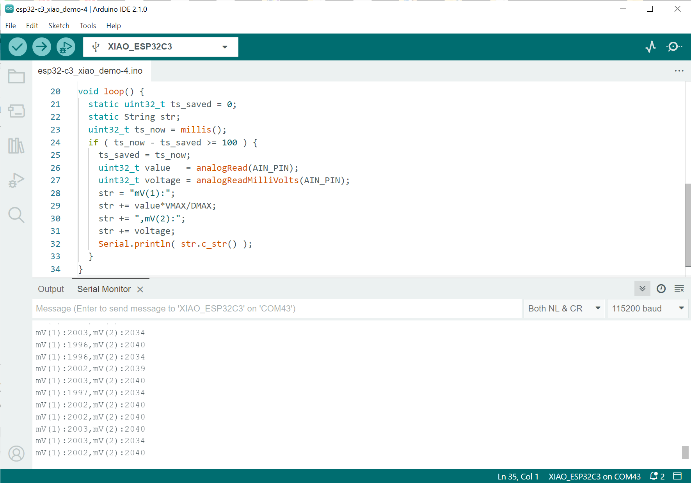
รูป: ตัวอย่างข้อความเอาต์พุตที่ได้รับมาจากบอร์ด
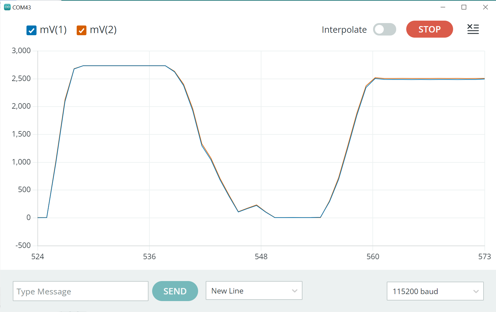
รูป: ตัวอย่างการแสดงกราฟของข้อมูลที่ได้รับมาจากบอร์ด โดยใช้ Arduino Serial Plotter ในขณะที่มีการหมุนปรับค่าแรงดันอินพุต-แอนะล็อก
จากรูปกราฟ ข้อมูล mV(1) ได้จากการอ่านค่า ADC
โดยใช้คำสั่ง analogRead(...)
แล้วนำมาคำนวณให้เป็นแรงดันไฟฟ้า และ mV(2) ได้จากการใช้คำสั่ง
analogReadMilliVolts(...) โดยตรง
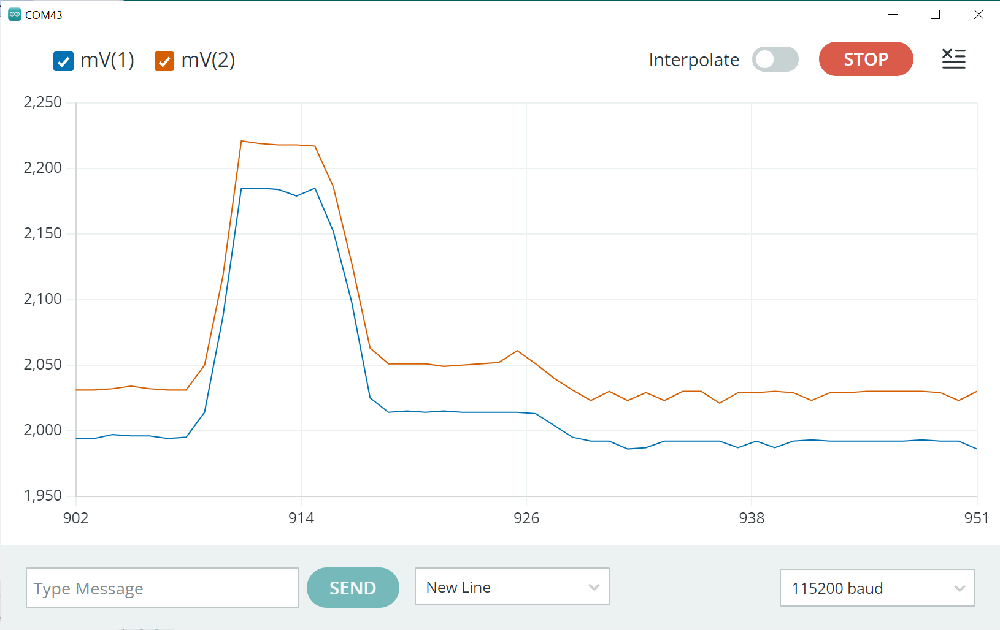
รูป: การเปรียบเทียบค่า mV(1) และ mV(2) ที่ได้จากการอ่านค่าสัญญาณแอนะล็อกในช่องอินพุตเดียวกัน
โค้ดตัวอย่างถัดไปเป็นการเปรียบเทียบการใช้คำสั่ง
analogReadMilliVolts(...) ของ Arduino-ESP32 API
กับการใช้คำสั่งต่อไปนี้ของ Espressif ESP-IDF API
เพื่อค่าจาก ADC แล้วนำไปแปลงให้เป็นตัวเลขสำหรับแรงดันไฟฟ้า
esp_adc_cal_characterize(...)adc1_get_raw(...)esp_adc_cal_raw_to_voltage(...)
#include "esp_adc_cal.h"
// ADC characteristics structure used for ADC calibration.
esp_adc_cal_characteristics_t adc_chars;
void setup() {
Serial.begin(115200);
delay(2000);
// ADC Single Read mode
// Set the ADC resolution to 12 bits
adc1_config_width( ADC_WIDTH_12Bit );
// Set the ADC attenuation level (11dB) for ADC1 Channel 2 (GPIO2)
adc1_config_channel_atten(ADC1_CHANNEL_2, ADC_ATTEN_DB_11);
// ADC calibration can be based on Two Point values
if (esp_adc_cal_check_efuse(ESP_ADC_CAL_VAL_EFUSE_TP) == ESP_OK) {
Serial.println( "Two-point values calibration is supported in eFuse." );
}
// Initialize the ADC1 characteristics structure.
esp_adc_cal_value_t cal_value = esp_adc_cal_characterize( ADC_UNIT_1,
ADC_ATTEN_DB_11, ADC_WIDTH_BIT_12, 1100, &adc_chars );
switch (cal_value) {
case ESP_ADC_CAL_VAL_EFUSE_VREF:
Serial.println( "eFuse Vref used for characterization" ); break;
case ESP_ADC_CAL_VAL_EFUSE_TP:
Serial.println( "Two-point values used for characterization" ); break;
case ESP_ADC_CAL_VAL_DEFAULT_VREF:
Serial.println( "Default Vref used for characterization" ); break;
default:
Serial.println( "Unknown ADC calibration method.. error" ); break;
}
}
void loop() {
static uint32_t ts_saved = 0;
static String str;
uint32_t ts_now = millis();
if ( ts_now - ts_saved >= 100 ) {
ts_saved = ts_now;
// read millivolts from XIAO A0 pin (ADC1 channel 2)
uint32_t mV = analogReadMilliVolts(A0);
// Read a raw value from the ADC1 channel 2.
uint32_t raw = adc1_get_raw(ADC1_CHANNEL_2);
// Convert the raw value to voltage using the built-in ADC calibration
uint32_t voltage = esp_adc_cal_raw_to_voltage(raw, &adc_chars);
str = "mV(1):";
str += mV;
str += ",mV(2):";
str += voltage;
Serial.println( str.c_str() );
}
}
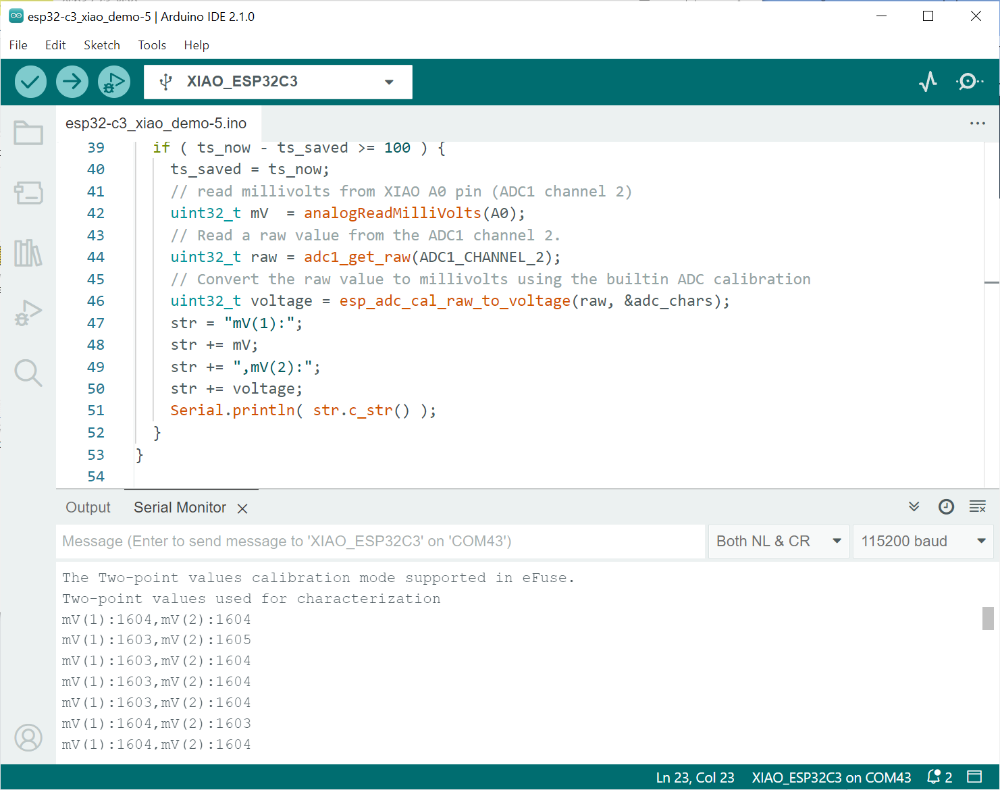
รูป: ตัวอย่างข้อความเอาต์พุต แสดงค่าแรงดันที่วัดได้ (ได้ค่า 1596 mV เมื่อวัดแรงดันอินพุตด้วยมัลติมิเตอร์)
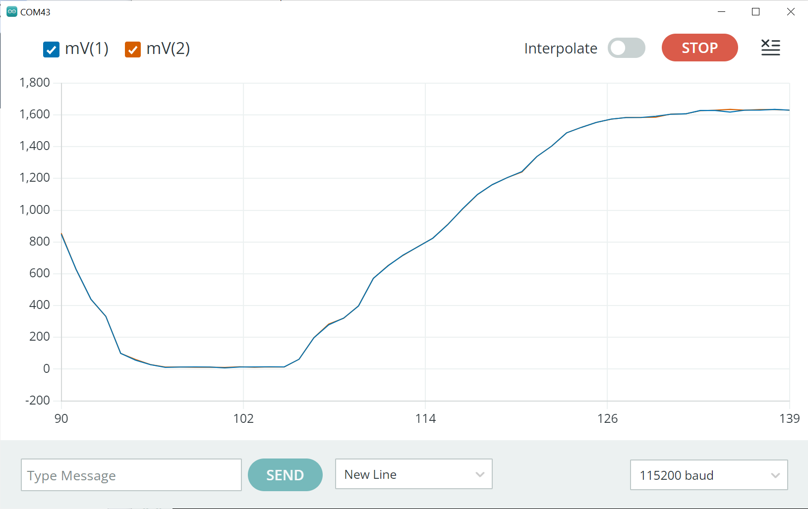
รูป: กราฟข้อมูลเปรียบเทียบระหว่าง mV(1) และ mV(2) ที่มีการเปลี่ยนแปลงในเชิงเวลา
▷ Arduino Sketch Demo 5#
โค้ดตัวอย่างถัดไปสาธิตการทำให้ ESP32-C3 เข้าสู่โหมด Deep Sleep เพื่อประหยัดพลังงาน และสามารถปลุกให้ซีพียูกลับมาทำงานได้ตามปรกติโดยการกดปุ่ม (Wakeup Pin) ซึ่งในตัวอย่างนี้ได้เลือกใช้ขา GPIO-5 ดังนั้นจะต้องมีการต่อวงจรปุ่มกดเพิ่มที่ขาดังกล่าว และต่อตัวต้านทานแบบ Pullup (10k)
เมื่อชิปถูกปลุกให้ทำงานในแต่ละครั้ง จะทำให้ LED ที่ขา GPIO-8 กระพริบ 3 ครั้ง ก่อนจะเข้าสู่โหมด Deep Sleep ถ้าไม่มีการกดปุ่มค้างไว้ ซึ่งจะเห็นได้ว่า LED จะไม่กระพริบ ดังนั้นซีพียูจะไม่ทำงานในขณะนั้น และรอการปลุกด้วยปุ่มกดในครั้งถัดไป
#define LED_PIN (8)
#define WAKEUP_PIN (5)
#define LED_ON (0)
#define LED_OFF (!LED_ON)
void setup() {
int state = LED_OFF;
pinMode( LED_PIN, OUTPUT );
digitalWrite( LED_PIN, LED_OFF );
pinMode( WAKEUP_PIN, INPUT_PULLUP );
for (int i=0; i < 6; i++) { // Blink the LED.
digitalWrite( LED_PIN, state^=1 );
delay(500);
}
if ( digitalRead(WAKEUP_PIN) ) {
// Enable deep sleep with GPIO wakeup.
esp_deep_sleep_enable_gpio_wakeup(
(1<< WAKEUP_PIN), ESP_GPIO_WAKEUP_GPIO_LOW );
// Enter the deep sleep mode.
esp_deep_sleep_start();
// The following statements will be not reached.
while(1) { // Blink the LED repeatedly.
digitalWrite( LED_PIN, state^=1 );
delay(50);
}
}
else { // The button is hold pressed.
Serial.begin( 115200 );
delay(2000);
Serial.println( "ESP32C3 is running normally." );
digitalWrite( LED_PIN, LED_ON );
}
}
void loop(){
}
▷ กล่าวสรุป#
บทความนี้ได้นำเสนอรายละเอียดในเบื้องต้นสำหรับการเริ่มต้นใช้งานบอร์ด Seeeduino XIAO ESP32-C3 และได้สาธิตการทำงานของบอร์ดโดยการเขียนโปรแกรม Arduino Sketch เป็นตัวอย่าง
This work is licensed under a Creative Commons Attribution-ShareAlike 4.0 International License.
Created: 2023-09-16 | Last Updated: 2024-01-07